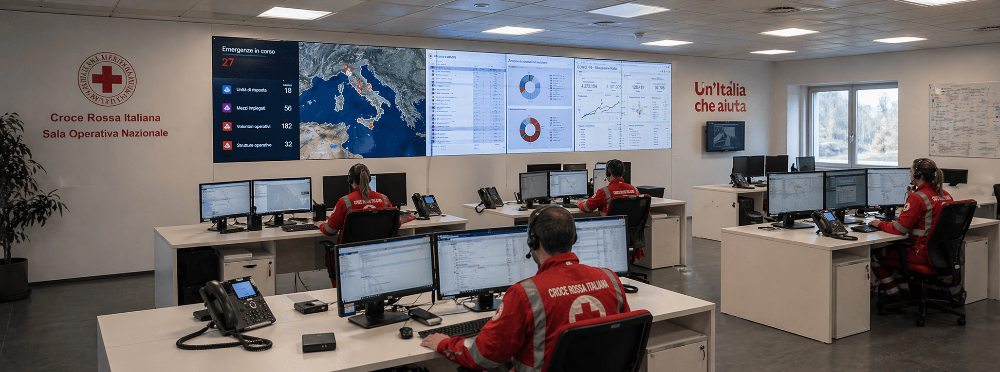
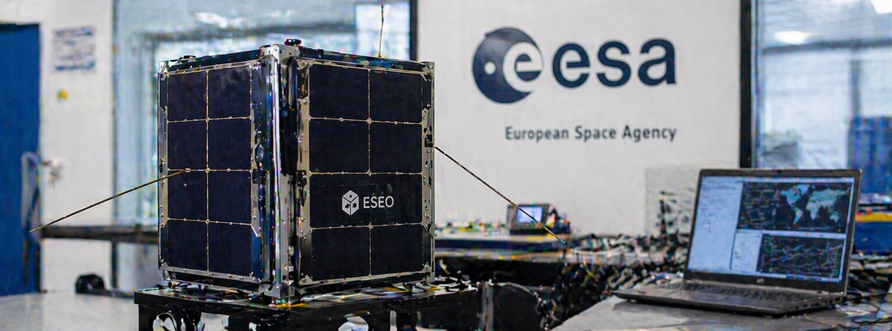
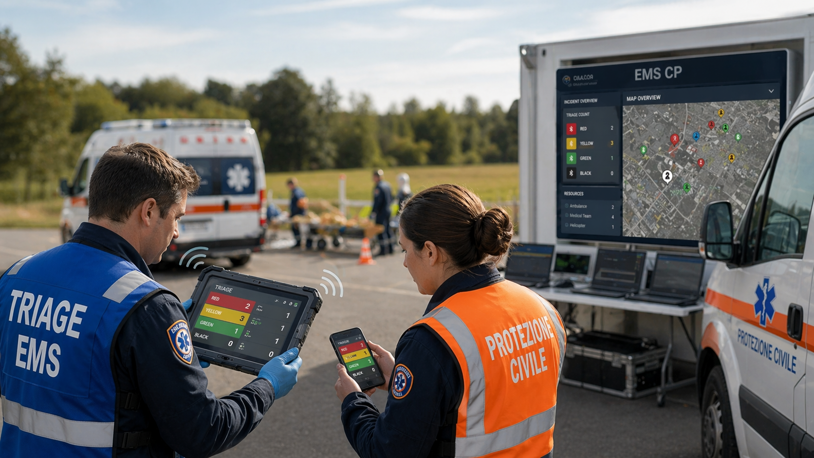

Software Engineer &
Software Engineer, Innovation Manager e docente di Informatica a Benevento. Da oltre 10 anni lavoro su sistemi enterprise e safety-critical, Emergency Management, WebGIS, progetti di ricerca finanziata e consulenze su gare d'appalto nella Pubblica Amministrazione.
Ingegnere Informatico con laurea specialistica all'Università del Sannio, lavoro da oltre 10 anni su sistemi software enterprise e safety-critical per l'Emergency Management, su progetti di ricerca finanziata e consulenze specialistiche su gare d'appalto nella Pubblica Amministrazione.
Attualmente ricopro il doppio ruolo di Software Analyst & Innovation Manager e di docente nelle scuole superiori, dove insegno Informatica, Tecnologie e Progettazione di Sistemi Informatici e Gestione di Progetti e Organizzazione di Impresa. Il mio percorso formativo e professionale si e' arricchito anche grazie a esperienze internazionali in Turchia, Grecia, Austria, Germania, Finlandia e Irlanda.
Ho svolto il ruolo di community manager per DevDay Benevento (300+ iscritti), speaker a conferenze e seminari universitari, e da sempre appassionato di tecnologia applicata al mondo reale.
Tra pianoforte jazz e amore per i viaggi, coltivo creatività e curiosità: elementi chiave anche nel mio modo di progettare e lavorare con la tecnologia.
Analisi, design e sviluppo di sistemi software anche enterprise: Web Applications, backend, microservizi REST, integrazione con Oracle e SQL Server, tuning prestazionale e modernizzazione applicativa.
Supporto tecnico per innovazione e trasformazione digitale: gare d'appalto e CONSIP, capitolati e valutazioni tecniche, presales engineering, documentazione di progetto e contributi per iniziative finanziate FESR, H2020 e bandi di ricerca.
Corsi, workshop e tutoring su informatica, AI e vibe coding, sviluppo software, metodologie Agile e gestione progetti. Attivita rivolte a scuole, aziende, professionisti e team tecnici.
Integrazione di LLM e strumenti AI nei processi di delivery: agentic workflows, prompt engineering e affiancamento ai team per accelerare sviluppo, analisi e produzione documentale.
Progettazione e sviluppo di soluzioni mission-critical per il soccorso e la gestione delle emergenze: dispatch 118, sale operative, fleet management real-time e gestione crisi.
Progettazione di sistemi GIS web-based con PostGIS, GeoServer, OpenLayers e Leaflet. Soluzioni cartografiche interoperabili basate su standard WMS/WFS per emergenza, territorio e Smart City.
Piattaforma safety-critical per la gestione real-time delle emergenze mediche e il monitoraggio della flotta. Team leader e architetto del sistema.
Enterprise – Beta 80 Group
Sistema operativo per la gestione delle emergenze e dei dati COVID-19 per la Croce Rossa Italiana. Product Owner e responsabile architettura.
Croce Rossa Italiana – Beta 80 GroupApplicazioni full-stack per SmartCities su stack MEAN e sistema WebGIS con PostGIS, GeoServer e OpenLayers per enti pubblici.
R&D – Beta 80 Group
Partecipazione al progetto interuniversitario ESEO dell'ESA, lanciato con successo il 3 dicembre 2018 a bordo di un SpaceX Falcon 9. Iniziativa ESA Academy con 10 universita europee e oltre 600 studenti coinvolti.
ESA – UnisannioProgetto di Ricerca e Sviluppo in sanita' orientato a e-health, telemedicina e Fascicolo Sanitario Elettronico 2.0. Iniziativa co-finanziata nel programma Smart Cities and Communities / PON Ricerca e Competitivita'.
ICAR-CNR – Smart Health 2.0
Sistema innovativo di triage digitale per Emergency Medical Services e Protezione Civile, con focus su interoperabilita', victim tracking, CAD e integrazione dei dati sanitari in scenari di emergenza maggiore.
i-TRIER – H2020 / Beta 80 GroupUn progetto, una collaborazione o anche solo una chiacchierata tecnica — scrivimi. Rispondo entro 24 ore.